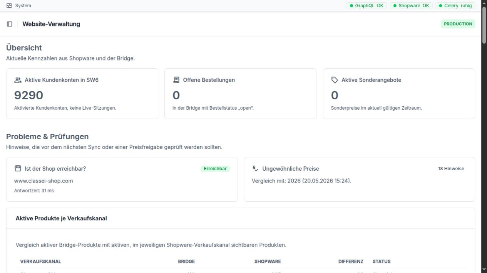

Anwenderhandbuch: tägliche Arbeit¶
Dieses Handbuch erklärt die wichtigsten Arbeitsbereiche der GC-Bridge in einfacher Sprache. Es richtet sich an Mitarbeiterinnen und Mitarbeiter, die mit Daten arbeiten, aber keine technischen Vorkenntnisse benötigen.
Jedes Kapitel enthält:
eine kurze Erklärung des Bereichs,
eine genaue Beschreibung der sichtbaren Felder,
einen typischen Arbeitsablauf,
Hinweise zu häufigen Fehlern,
genau zwei Praxisbeispiele.


Die Startseite zeigt zuerst wichtige Kennzahlen und Prüfhinweise. Die sieben Kapitel dieses Handbuchs öffnen Sie über die linke Navigation.
Arbeitsbereiche
- Issues
- Wofür ist dieser Bereich da?
- Navigation
- Die Arbeitsliste „Issues“
- Ein Issue anlegen oder bearbeiten
- Anhänge hinzufügen
- Ein Issue abschließen
- Das Issue-Archiv
- Kategorien
- Automatisch angelegte Issues
- Meldung über neue Issues nach der Anmeldung
- Häufige Hinweise und Fehlerquellen
- Praxisbeispiel 1: Fehler beim Bearbeiten einer Bestellung melden
- Praxisbeispiel 2: Einen zu früh geschlossenen Vorgang wieder aufnehmen
- E-Mails
- Wofür ist dieser Bereich da?
- Navigation
- Kampagnen
- Kategorien
- Newsletter-Empfänger
- Warteschlange
- Komponenten – nur für Vorlagen-Verantwortliche
- Häufige Hinweise und Fehlerquellen
- Praxisbeispiel 1: Eine Produktaktion erstellen und als HTML prüfen
- Praxisbeispiel 2: Empfänger zuordnen und die persönliche Fassung kontrollieren
- Bestellungen
- Wofür ist dieser Bereich da?
- Navigation
- Die Bestellliste
- Aktionen in der Bestellliste
- Feldbeschreibung der Bestellung
- Feldbeschreibung der Bestellpositionen
- PayPal-Liste
- Typischer Ablauf
- Häufige Hinweise und Fehlerquellen
- Praxisbeispiel 1: Neue Bestellung nach Microtech übertragen
- Praxisbeispiel 2: Schweizer Bestellung als Zoll-CSV ausgeben
- Kunden
- Produkte
- Wofür ist dieser Bereich da?
- Navigation
- Die Produktliste
- Aktionen in der Produktliste und im Produkt
- Produkt anlegen oder bearbeiten
- Preise als eigene Liste
- Kategorien verwalten
- Produkt-Archiv
- Attributgruppen und Attributwerte
- Variantenfamilien
- Preiserhöhungen
- Typischer Ablauf bei einem einzelnen Produkt
- Häufige Hinweise und Fehlerquellen
- Praxisbeispiel 1: Produkttext und Bild korrigieren und nach Shopware übertragen
- Praxisbeispiel 2: Geprüfte Preiserhöhung mit Preisliste durchführen
- Dokumente
- Wofür ist dieser Bereich da?
- Navigation
- Die Dokumentliste
- Dokument anlegen oder bearbeiten
- Aktionen eines Dokuments
- Dokumenttypen
- Word-Import
- Dokumentversionen
- Typischer Ablauf bei einer normalen Dokumentänderung
- Häufige Hinweise und Fehlerquellen
- Praxisbeispiel 1: Neue AGB aus einer Word-Datei prüfen und freigeben
- Praxisbeispiel 2: Preisliste prüfen und sicher in Shopware veröffentlichen
- Mappei